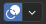

视图叠加层
参考
- 模式
所有模式
- 标题栏

Clicking the icon toggles all overlays in the 3D Viewport. The dropdown button displays a popover with more detailed settings, which are described below.
The available options depend on the mode that the 3D Viewport is in.
物体模式
The following options are always present, independent of the current mode. Some of the overlays can be customized in the Viewport Preferences.
辅助（引导）
- 栅格
在正交侧视图中显示栅格。
- 基面
在透视视图中显示地平面。
- 轴向
显示 X、Y 和/或 Z 轴线。
- 比例|缩放
栅格/基面各线间距离。
- 细分
栅格线之间的细分数。
- 文本信息
Show various bits of information in the top left corner of the viewport.
- View Perspective
Name of the View Perspective, such as "Top Orthographic" or "User Perspective."
- 播放帧率(FPS)
Displays the Frames Per Second at which the animation is playing. By default, Blender goes through every single frame, which may result in an FPS that's lower than intended (and the animation playing slower than realtime); the FPS turns red in this case. You can change this behavior in the Playback popover of the Timeline.
- 物体信息
Shows the current frame in parentheses, followed by the names of the selected Collection and the active object. When applicable, also shows the selected Shape Key and (in angle brackets) the Marker on the current frame. If the object has a keyframe on the current frame, the Object Info is displayed in yellow.
- Grid Resolution
When the view is aligned to a world axis (see 视图), the Text Info additionally shows the smallest distance between two parallel grid lines.
- 统计信息
Show information about the amount of objects and geometry. Note that the counters depend on the current selection. For example, selecting a mesh gives info on the number of vertices, edges, and faces, while selecting a light shows the number of lights in the scene.
Objects -- Number of the selected objects and the total count.
Geometry -- Displays information about the current scene depending on the mode and object type. This can be the number of vertices, faces, triangles, or bones.
- HDRI 预览
Show two spheres, one glossy and one diffuse, to preview the HDRI that's being used for world lighting. While HDRIs can be used in both the Material Preview and Rendered shading modes, the HDRI Preview overlay is only available in the former.
- 3D游标
显示 3D游标。
- 标注
显示 标注。
物体
几何数据
- 线框
Display mesh edges. Similar to Wireframe Shading, but displays edges on top of existing shading. The value slider adjusts which edges to display: lower values hide edges on surfaces that are almost flat, while a value of 1 shows all edges.
- 不透明度
显示边的不透明度，从 0（不可见）到 1（完全不透明）。
- 淡化非活动几何体
In modes other than Object Mode, fade out objects that you're not working on. The slider controls how much they're faded out.
- 面朝向
Show faces whose normal is pointing towards the camera in blue, and faces whose normal is pointing away from the camera in red. This lets you quickly check for faces that are oriented incorrectly: the outside surface of an object should typically be all blue.
运动追踪
显示 运动追踪 的叠加层。
- 相机路径
显示重建后的摄像机路径。
- 标记名称
显示重建后的轨迹物体名称。
- 轨道
Change the display of the reconstructed tracks: plain axes, arrows and so on.
- 尺寸
更改重建轨道的显示尺寸。
Mesh Edit Mode
以下选项在网格编辑模式下可用。
- 边
Highlight selected and partially selected edges. Only affects vertex and face selection modes, as edges are always highlighted in edge selection mode.
- 面
高亮显示选中的面。所有模式均受影响。
- 中心
在实体着色模式下显示面中心点。（面中心点在线框着色模式下始终可见）
仅影响面选择模式。
- 折痕
显示因使用 表面细分修改器 标有折痕的边。
- 锐利
显示锐边，可用于 拆边修改器。
- 倒角
显示为 倒角修改器 创建的权重。
- 缝合边
显示 UV展开缝合边。
着色
- Hidden Wire
Show only front-facing wireframes. This is useful for a retopology workflow.
Tip
Optimally this could be combined with the X-Ray display setting.
- 顶点组权重
Display weights in Edit Mode.
- 零权重
Display unreferenced and zero-weighted areas in black. This helps to identify areas with very low weights that have been painted onto.
- 无
以正常方式显示顶点。
- 活动
在活动顶点组中无权重的顶点将显示为黑色。
- 全部
在任意顶点组中无权重的顶点将显示为黑色。
网格分析
显示 网格分析 叠加层。
测量
Show numerical measures of the selected elements. The 单位 can be set in the Scene properties.
- 边长
显示所选边边长。
- 边的夹角
显示所选边相邻面之间的夹角。
- 面的面积
显示所选面的面积。
- 面内角
显示所选面的各内角角度。
Tip
变换时会显示连接到所选项的几何图形，例如，允许移动顶点并查看连接的边长。
Note
These values respect the Transform Space in the Sidebar. Use Global if you want the object's scale to be applied to the measurements.
See also
测量 工具，用以测量任意距离和角度。
法向
显示顶点法线
在顶点处显示面法线（拆分法线）
显示面法线
- 尺寸
所选法线显示的尺寸。
- 恒定屏幕法线尺寸
相对于缩放级别保持法线大小恒定。
开发人员
这些叠加层仅当 界面设置 中的 开发选项 开启后才可用。
- 编号
显示所选点、线、面的编号。
Freestyle
这些设置应用于 Freestyle 线条艺术渲染器。
- 边标记
显示 Freestyle 边标记。
- 面标记
显示 Freestyle 面标记。
雕刻模式
顶点绘制
- 镂板遮罩不透明度
Does nothing. (Stencil masks are only available for texture painting.)
- 显示线框
Display mesh edges in white (unlike the Wireframe overlay which shows them in black).
权重绘制
- 不透明度
叠加层的不透明度。
- 零权重
Display unreferenced and zero-weighted areas in black. This helps to identify areas with very low weights that have been painted onto.
- 无
以正常方式显示顶点。
- 活动
在活动顶点组中无权重的顶点将显示为黑色。
- 全部
在任意顶点组中无权重的顶点将显示为黑色。
- 显示权重轮廓线
显示由具有相同插值权重的点形成的轮廓线。
这可视化了重量变化太小，无法从颜色中看到，并且可用于例如在使用平滑工具和刷子时判断梯度的平滑度和一致性。
- 显示线框
Display mesh edges in white (unlike the Wireframe overlay which shows them in black).
纹理绘制
- 镂板遮罩不透明度
镂板遮罩 叠加层的不透明度。
骨骼
- 淡化几何体
Show the bones on top and face other geometry to the back. The opacity can be controlled with the slider. Only available in Pose Mode.
- 骨骼线框不透明度
The maximum opacity used for bones drawn in the Wireframe shading mode (or in Solid shading mode with X-Ray active). This is helpful when it is necessary to reduce clutter and focus on the mesh rather than bones.
蜡笔
- 洋葱皮
Show ghosts of the keyframes before and after the current frame. If Multiframe is enabled, ghosts of the selected keyframes are shown instead. See 洋葱皮.
- 画布
Display a grid over the Grease Pencil drawing plane. The opacity of the grid can be controlled with the slider. When using the Canvas X-Ray option, objects are drawn behind the canvas grid.
- 淡化非活动层
降低除活动层之外的所有层的不透明度。可通过滑块控制不透明度系数。
- 淡化非活动物体
Cover all of the viewport except the active Grease Pencil object with a full color layer to improve visibility while drawing over complex scenes.
- 淡化蜡笔物体
包括或排除蜡笔物体。
- 编辑线条
在编辑模式下显示编辑线。
- 仅在多帧
When Multiframe is enabled and keyframes other than the current frame are selected, strokes on those keyframes are displayed as just their edit lines -- the strokes themselves are hidden. Note that this does not affect Onion Skinning.
- 笔画方向
Toggle the display of the selected strokes' start points (green) and end points (red) to visualize their direction.
- 材质方向
在所选笔画旁显示材质名称。
- 顶点不透明度
Opacity for vertices (points) and edit lines in Edit Mode.
- 顶点绘制不透明度
The opacity of the vertex color overlay in Vertex Paint Mode and Draw Mode. Note that in Draw Mode, vertex paint is only visible in the Material Preview and Rendered shading modes by default. To see it in Solid mode, you either need to use Vertex Paint Mode, or set the Color shading setting to Attribute.
- 控制柄
当 曲线编辑 处于活动状态时，此选项控制曲线在3D视图中的显示方式。
- 无
不显示控制柄，仅显示控制点。
- 选中项
仅显示选定控制点的控制滑块。
- 全部
所有控制柄都被展示。